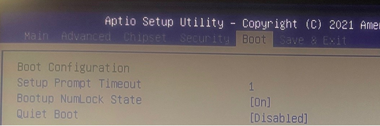
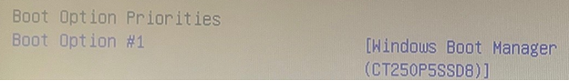
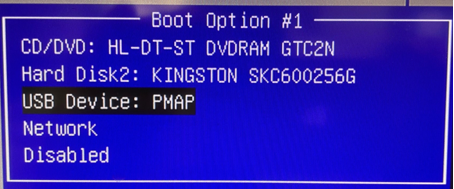
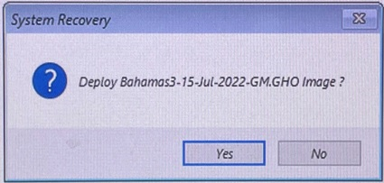

Re-image Windows 8 3rd version Console PC
This procedure describes how to re-image the 3rd version of the Windows 8 Console PC.
Perform this procedure when the Windows 8 console PC does not boot to the Windows desktop or when desktop appears to be corrupted.
-
Make an immediate backup if the user interface is available. If the user interface is not available, make sure that a backup or copy of the database is available on the USB [E:]BACKUPDRIVE drive.
Note: The re-image process erases all information on the PC hard drive. A backup or copy of the database is required to restore the database.
-
Insert the Windows 8 re-image flash drive into an available USB 3.0 (blue) port and restart the PC to access the system BIOS.
- Enter security password "Access2Admin" when prompted to launch Windows.
- After entering the password, immediately press the Delete key to enter the system BIOS.
-
Change the device boot order in the BIOS utility.
- Use the Left / Right arrow keys to navigate to the
Boot
tab.

- Use the Up / Down arrow keys to highlight
Boot Option #1 and select
Enter.

- Use the Up / Down arrow keys to highlight the USB Device: PMAP drive and then Enter to select it.

- Use the Left / Right arrow keys to navigate to the
Boot
tab.
- Use the arrow keys to navigate from the Boot tab to the Save & Exit tab, select Save & Exit then Yes to save and exit the BIOS. The PC will reboot.
-
After the PC boots, a pop-up will prompt the user to start re-image process. Select
Yes to start.

-
The re-image process will take approximately 15 to 20 minutes to complete.
Note: Press Escape when prompted to abort the re-image if necessary.
- When the re-image process completes, the user will be presented with a prompt to reboot the PC.
-
The re-image process will take approximately 15 to 20 minutes to complete.
-
Enter security password
"Access2Admin" when prompted to launch Windows.
- After entering the password, immediately press the Delete key to enter the system BIOS.
-
Change the device boot order in the BIOS utility.
- Use the Left / Right arrow keys to navigate to the Boot tab.
- Use the Up / Down arrow keys to highlight Boot Option #1 and select Enter.
- Use the Up / Down arrow keys to highlight CD/DVD: HL-DT-ST DVDRAM GTC2N (or other CD/DVD drive) and then Enter to select it.
- Use the arrow keys to navigate from the Boot tab to the Save & Exit tab, select Save & Exit then Yes to save and exit the BIOS. The PC will reboot.
- Remove the Windows 8 re-image flash drive.
- Load system software and then restore the database. Refer to the Database - Restoring Console PC from Backup procedure for details.